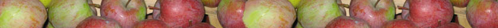

Tarifs
| Euros | ||
| abricotiers, alisiers, cerisiers, cognassiers, nashis, néfliers, pêchers, poiriers, pommiers, pruniers | 19 | |
| châtaigniers | 35 | |
| rosiers | 15 |
Minimum de commande de 90 € pour expédition.
Les marchandises sont expédiées par transporteur ou par la poste suivant le volume des colis,
et sont payables à réception de facture.
Me préciser, pour le cas où une variété serait épuisée,
si vous souhaitez que je la remplace par la variété la plus approchante.
Liste complète des variétés fruitières
Vous pouvez télécharger le catalogue en version PDF
ABRICOTIERS
J'ai publié dans les "Quatres Saisons du Jardinage" un article sur l'abricotier il y a quelques années. Vous y retrouverez des information sur les conditions de développement de cette espéce, les bonnes pratiques de plantation, de taille et d'entretien.
| Variété | caractéristiques | maturité |
|---|---|---|
| BELIANA | fruit petit, parfumé, jaune clair | FIN JUIN |
| ROUGET DE SERNHAC | fruit doré, savoureux; convient en confiture et pâte de fruit. Originaire du gard | FIN JUIN |
| COROT | arbre résistant, rustique; fruit petit, assez pâle, tendre, parfumé | FIN JUIN |
| ST JEAN DE BRUEL | fruit peu coloré, tendre; bon en compote | FIN JUIN |
| BLANC PRECOCE | fruit doré, petit, savoureux | FIN JUIN |
| NJ19 | fleur rosée, fruit doré et parfumé | FIN JUIN |
| STARK EARLY ORANGE | peu productif, mais fruit assez gros, coloré et parfumé | FIN JUIN |
| PRECOCE DE SAUMUR | fruit jaune pâle, petit et parfumé | FIN JUIN |
| CANINO | orangé, gros calibre, qualité moyenne; sensible au monilia | 5 JUILLET |
| JANTARNI | fruit pointu, bien coloré, très parfumé | 5 JUILLET |
| ROUDE DE FOURNES | fruit passable, mais arbre productif | 5 JUILLET |
| PRECOCE DE BOULBON | résistant et fertile; fruit orange, chair fine, parfumée | 10 JUILLET |
| MODESTO | arbre rustique, régulièrement productif; fruit jaune orangé, moyen | 10 JUILLET |
| MONIQUI | gros fruit blanchâtre, très parfumé; peu productif | 10 JUILLET |
| DUCHAMP | fruit orangé, très parfumé | 10 JUILLET |
| JULIN | fruit très gros, coloré de rouge, intéressant pour les bocaux car très ferme | 10 JUILLET |
| HARGRAND | variété canadienne, fruit très gros, jaune pâle, goût moyen | 10 JUILLET |
| LUIZET | convient en montagne; assez gros, savoureux | 15 JUILLET |
| GROS ROUGE | fruit très bon, très tendre | 15 JUILLET |
| ROYET DE L'ARDECHE | arbre rustique, fruit passable | 15 JUILLET |
| ROUGE DU ROUSSILLON | arôme relevé, productif | 15 JUILLET |
| ROYAL | rustique, fruit moyen, parfumé | 15 JUILLET |
| AMPUIS | très rustique; fruit petit, jaune pâle, mais très bon ; amande douce, le meilleur en confiture | 15 JUILLET |
| FLEURIT TARD | floraison tardive, très savoureux | 20 JUILLET |
| POLONAIS ou ORANGE DE PROVENCE | ou rustique, gros fruit verdâtre, très doux, le meilleur en bocaux | 20 JUILLET |
| MERVEILLE DU DAUPHINE | chair très parfumée, épiderme coloré rouge | 20 JUILLET |
| BERGERON | floraison tardive, très régulier en prod., sensible au monilia, à la table et en patisserie | 25 JUILLET |
| PECHE DE NANCY | fruit moyen, jaune, très parfumé | 25 JUILLET |
| POIZAT | fertile, très bon; craint la pluie à maturité | 25 JUILLET |
| PAVIOT | réclame bonne exposition, fruit gros, le meilleur des abricots | 30 JUILLET |
| PERRIN-BERQUET | gros fruit de table parfumé | 30 JUILLET |
| BLANC ROSE DE PROVENCE | fruit gros et très parfumé, peu productif | 30 JUILLET |
ALISIERS (sorbus torminalis)
Cultivé 2000 ans av. J.Christ, cet arbre de grand développement (10-15m), en voie de perdition, recherché aussi pour son bois, donne quantité de petits fruits.
Floraison blanche, superbe; arbre mellifère. Maturité des fruits en septembre. Le sujet est obtenu par semis.
AMANDIERS
Les amandiers, greffés sur pêcher x amandier, conviennent pour les terrains sec et filtrants. C'est un arbre méridional qui nécessite une bonne exposition lorsqu'il est cultivé plus au nord.
| Variété | caractéristiques | maturité |
|---|---|---|
| PRINCESSE | variété précoce, coque très tendre | FIN AOUT |
| AI | grande fertilité, coque tendre, consommable en vert; floraison tardive | 15 SEPT |
| ARDECHOISE | coque demi dure, très bonne | 15 SEPT |
| GLORIETA | origine d'Espagne, coque tendre, très bonne | 15 SEPT |
| MAS BOVERA | origine d'Espagne, coque tendre, très bonne | 15 SEPT |
CERISIERS
Le cerisier greffé sur franc donne un arbre de longue durée qui se développe très vite. Greffé sur hybride Gisel A6, l'arbre est demi nain.
| Variété | caractéristiques | maturité |
|---|---|---|
| BURLAT | assez grosse, très bonne | MI JUIN |
| MOREAU | assez grosse, très ferme, croquante, très bonne, convient pour bocaux | MI JUIN |
| ULSTER | moyenne à grosse, ferme, se conserve bien, résiste aux gelées sur fleurs | DEB JUIL |
| MERVEILLE DE ST GENIS LAVAL | moyenne, ferme, bonne | DEB JUIL |
| VAN | moyenne à grosse, ferme, très bonne, arbre à tailler régulièrement | DEB JUIL |
| STARK HARDY GIANT | grosse, très bonne | DEB JUIL |
| SUMMIT | très grosse, ferme, arbre à palisser | DEB JUIL |
| SUNBURST | grosse, tendre, auto fertile | DEB JUIL |
| DURONI N°3 | très grosse, très ferme, acidulée | MI JUIL |
| HEDELFINGEN | ferme, croquante, très bonne, acidulée | MI JUIL |
| KORDIA | moyenne, croquante, très bonne, acidulée | MI JUIL |
| NOIRE D'ECULLY | bonne, très noire, arbre vigoureux | MI JUIL |
| NOIRE DE MACHAD | originaire d'Iran, ferme, très bonne | MI JUIL |
| BADACSONYI | originaire du lac Balaton en Hongrie, très bonne | MI JUIL |
| ST BRUNO | moyenne, très bonne | MI JUIL |
| TARDIF DE VIGNOLA | moyenne, bonne, arbre vigoureux | MI JUIL |
| GRIOTTE DE MONTMORENCY | petite, très acidulée, mettre à l'alcool | FIN JUIN |
| GRIOTTE DU LYONNAIS | petite, très acidulée, mettre à l'alcool | FIN JUIN |
| CHATEL MOREL | ou convient spécialement | DEB JUIL |
| GRIOTTE DU NORD | à la fabrication de l'eau de vie |
CHATAIGNIERS
Le châtaignier aime le terrain acide, calcifuge. La plantation doit se faire de novembre à janvier. Pollinisation par les châtaigniers sauvages.
| Variété | caractéristiques | maturité |
|---|---|---|
| PELLEGRINE | excellente variété de saveur très bonne, convient pour être séché, très bonne conservation, débourrement tardif | 1er OCT |
| MERLE | bonne conservation, bonne qualité gustative, châtaigne de bouche | 10 OCT |
| BOUCHE ROUGE | grosse, bonne qualité | 20 OCT |
| COMBALLE | grosse, très sucrée, tardive | 20 OCT |
COGNASSIERS
Se reporter à mon article dans "les quatre saisons du jardinage", n° 77
| Variété | caractéristiques | maturité |
|---|---|---|
| CHAMPION | rustique, fruit de calibre moyen, parfumé, convient particulièrement pour la pâte de coing | OCTOBRE |
| MONSTRUEUX DE VRANJA | très vigoureux, fruit énorme | OCTOBRE |
| DU PORTUGAL | fruit assez gros, bonne qualité | OCTOBRE |
| BOURGEAULT | très vigoureux et fertile | OCTOBRE |
| A FRUIT ROND | assez vigoureux | OCTOBRE |
CORMIERS (sorbus domestica)
Description identique à celle de l'alisier, mais avec un feuillage différent. Le sujet est également obtenu par semis.
NASHIS

Sous le signe de l'orient, cultivé depuis fort longtemps en Chine et au Japon, nouvellement introduit en France. Il se greffe sur poirier franc. Le fruit, intermédiaire entre la pomme et la poire, au goût subtil et indéfinissable, est très désaltérant, juteux, frais et ferme.
Vous pouvez retrouver un article que j'ai publié dans les Quatres Saisons du Jardinage dans lequel vous retrouverez des inforamtion sur l'entretien de votre nashis.
| Variété | caractéristiques | maturité |
|---|---|---|
| KIMIZUKA | bonne qualité, épiderme bronzé | FIN JUIL DEB AOUT |
| HOSUI | (abondance) épiderme bronzé, très bonne qualité | FIN AOUT |
La conservation peut être faite au réfrigérateur pendant 3 à 5 mois, sinon le fruit se conserve 15 jours à 3 semaines. Le fruit est fragile, sensible aux meurtrissures causées par le vent, les oiseaux et la cueillette.
Se reporter mon article dans "les quatre saisons du jardinage", n° 59.
NEFLIERS (mespilus germanica)
Arbustes rustiques. Le fruit se consomme après les premières gelées.
| Variété | caractéristiques |
|---|---|
| A GROS FRUITS | très fertile |
PECHERS
C'est greffé sur franc que le pêcher végète le mieux. Cependant, on le préférera greffé sur pêcher amandier pour les sols très calcaires, et sur prunier saint julien pour les sols très argileux. - à spécifier à la commande - Les variétés à chair blanche et sanguine, présentées ci-après sont peu sensibles à la cloque.
chair blanche
| Variété | caractéristiques | maturité |
|---|---|---|
| MADELEINE POUILLET | mutation de may flower, fruit plus coloré et plus précoce | FIN JUIN |
| ROUGE D'OC | fruit aplati, épiderme bien rouge, chair veinée de rouge, bonne, feuillage rougissant en automne | FIN JUIN |
| MAY FLOWER | arbre rustique, fruit assez bon | FIN JUIN |
| RIBET | (1894) vigoureux, vieille variété cultivée dans la vallée de l’ Eyrieux (07); | FIN JUIN |
| convient aux climats secs, chair blanche, grain fin | ||
| INVINCIBLE GUILLOUX | obtenue à St Genis Laval (69); fruit veiné de rose, | DEB JUILLET |
| AMSDEN | très bon, résiste à la cloque, fleur sensible | DEB JUILLET |
| chair fine, adhérente au noyau, mais parfumée | ||
| ENTRE DE CAMPALOU | arbre rustique; chair blanche, épiderme rosé, parfumée | DEB JUILLET |
| CHARLES INGOUF | très bon, résiste à la cloque, fleur sensible | 10 JUILLET |
| ENTRE DE CHANAS ou | ou variété remarquable à tous points de vue; | 15-20 JUILLET |
| SURPASSE AMSDEN ou | arbre vigoureux, fructification régulière, beaux fruits gros | |
| MERVEILLE DES MARCHES | traversés d'un sillon rouge sur un côté; chair blanche, fine | |
| CARMAN | vigoureux, gros fruits très bons, porte régulièrement, peu résistant à la cloque | 15-20 JUILLET |
| DUGELAY | bon, moyennement résistant à la cloque | MI JUILLET |
| ROUGE JULIEN | assez bon, résistant à la cloque | MI JUILLET |
| PITAVAL | très bon, résistant à la cloque | FIN JUILLET |
| PRECOCE DE HALE | très bon, très résistant à la cloque, fleur sensible | FIN JUILLET |
| INCOMPARABLE GUILLOUX | bon, résistant à la cloque, sensible oïdium coryneum | FIN JUILLET |
| GUILLOUX ELEGANTE | très très bon, peu résistante à la cloque | FIN JUILLET |
| BENONI | bon, résistant à la cloque, fleur rustique | FIN JUILLET |
| CHARLES ROUX | très bon, assez résistant à la cloque, fleur rustique | FIN JUILLET |
| GAILLARD N°2 | très bon, résistant à la cloque | 10-15 AOUT |
| TOURNIER | très bon, très résistant à la cloque | 10-15 AOUT |
| GAILLARD N° 22 | très résistant à la cloque très bon | 15 AOUT |
| CHAPUIS | très bon, résistant à la cloque, très parfumé | 15 AOUT |
| DOCTEUR ARIBAUD | assez bon, résistant à la cloque, fleur rustique | 20-25 AOUT |
| GROSSE MIGNONNE HATIVE | très bon, peu résistant à la cloque | FIN AOUT |
| MME GIRERD | très bon, résistant à la cloque | FIN AOUT |
| VERAUD | variété de la région lyonnaise, beau fruit, vigoureux, résistance moyenne à la cloque | FIN AOUT |
| SENATEUR CAZENEUVE | très bon, recommandée | FIN AOUT |
| TARDIVE AU MONT D'OR | très résistant à la cloque | FIN AOUT |
| GALANDE | très bon, assez sensible à la cloque | DEB SEPT |
| REINE DES VERGERS | assez bon, résistant à la cloque, fleur sensible | DEB SEPT |
| MME GUILLOUX | très bon, résistant à la cloque et autres, fleur rustique | DEB SEPT |
| BELLE IMPERATRICE | très bon, résistant à la cloque | MI SEPT |
| PECHE DE VIGNE | agréable au moment des vendanges, rustique | 20 SEPT |
| HENRI MOULIN | gros, bon, peu résistant à la cloque | 20-25 SEPT |
| TARDIVE VALLA MARNAS | bon, résistant à la cloque, fleur rustique | FIN SEPT |
| SOLEIL D'OCTOBRE | joli fruit, bon | 1er OCT |
chair sanguine
| Variété | caractéristiques | maturité |
|---|---|---|
| SANGUINE PRECOCE ST LAURENT | bon, chair rouge vineuse | 15-20 AOUT |
| SANGUINE INTERMEDIAIRE | très bon, sensible à la cloque | 1er SEPT |
| SANGUINE TARDIVE | bon, très résistant à la cloque | FIN SEPT |
J'ai donné ci dessus la description des variétés qui me paraissent les meilleures et les plus aptes à donner de très bons résultats pour le jardinier amateur. Dans la liste ci-dessous, il y a des variétés qui peuvent aussi donner de très bons fruits, mais elles sont plus fragiles et demanderont aux jardiniers, plus d’attention pour la cloque, le monillia …
chair jaune
| Variété | caractéristiques | maturité |
|---|---|---|
| DIXIRED | très très bon, très sensible à la cloque | 15 JUILLET |
| ARP BEAUTY | très bon, peu résistant à la cloque | 20 JUILLET |
| FAIRHAVEN | très bon, sensible à la cloque | 20 JUILLET |
| CARDINAL | (1951) bon, sensible à la cloque | FIN JUILLET |
| FLAVORCREST | très très bon, peu productif | 15-20 AOUT |
| HARKEN | très bon, fleur résistante au gel | 15-20 AOUT |
| VELVET | résistant à la cloque, fleur résistante au gel | 15-20 AOUT |
| LORING | (1943) très bonne, sensible à la cloque | DEB SEPT |
| ELBERTA | assez bon, sensible à la cloque; pour bocaux; s'adapte bien | MI SEPT |
| RUBIDOUX | très bonne, à réserver au sud de la France | FIN SEPT |
chair blanche
| Variété | caractéristiques | maturité |
|---|---|---|
| SPRING TIME | bonne en sorbet | FIN JUIN |
| ROBIN | sans acidité | DEB JUIL |
| RED ROBIN | acidulée, chair veinée de rouge | 15 - 20 JUILLET |
| GENADIX 4 | très bonne, parfumée | 20 -25 JUILLET |
| GENADIX 7 | très bonne, parfumée | 1er - 5 AOUT |
| REDWING | sans acidité, très bon | 1er - 5 AOUT |
brugnon et nectarines
| Variété | caractéristiques | maturité |
|---|---|---|
| MORTON | très bon, chair blanche, peu sensible à la cloque, sensible au monilia | FIN JUILLET |
| NECTARINE CERISE | (1600) bon, original, curieux, rustique | FIN AOUT |
| NECTARINE FLAMING GOLD | très bon, chair jaune, fleur sensible | DEB SEPT |
| NECTARINE FANTASIA | chair jaune | 10-15 SEPT |
Traitement au cuivre : bouillie bordelaise 20 à 25 g/litre au gonflement du bourgeon, en général 15 janvier - 15 février, renouvelé toutes les 3 semaines environ, et 6,5 g à la chute des feuilles.
Se reporter à mon article dans "les quatre saisons du jardinage", n° 52.
POIRIERS
Le poirier greffé sur franc donne un arbre de grande vigueur. On peut aussi le greffer sur cognassier où il donne de beaux sujets avec une meilleure mise à fruit, des fruits plus gros et plus savoureux. Le poirier s'adapte facilement en montagne.Dans la liste ci-après, la résistance à la tavelure est notée "R".
| Variété | caractéristiques | maturité |
|---|---|---|
| ST JEAN | petit fruit, bon, juteux, chair verte | FIN JUIN |
| COLOREE DE JUILLET | (1872) petit, craquant | MI JUILLET |
| BEURRE GIFFARD | moyen, fin, fondant, très bon | MI JUILLET |
| CLAUDE BLANCHET | (1877) petit, juteux et parfumé | FIN JUILLET |
| CLAPPS FAVORITE ROUGE | gros, sucré, chair blanche, très bon, R | FIN JUILLET |
| BEURRE MORETINI | (1930) gros, parfumé, chair blanche, très bon, R | FIN JUILLET |
| Dr JULES GUYOT | gros, parfumé, chair blanche, assez bon, R | FIN JUILLET |
| PRECOCE DE TREVOUX | (1862) assez gros, bon et parfumé, R | DEB AOUT |
| WILLIAM BLANCHE | gros, très parfumé, très bon | MI AOUT |
| WILLIAM ROUGE | clone de W. Blanches avec l'épiderme rouge | MI AOUT |
| TRIOMPHE DE VIENNE | gros, juteux, sucré et parfumé, très bon, chair blanche, R | FIN AOUT |
| SUCREE DE MONTLUCON | (1812) gros, bon, chair blanche, mi fine, fraîche, légèrement musquée, R | FIN AOUT |
| SANGUINE DE FRANCE | épiderme rouge, fondante | DEB SEPT |
| BEURRE SUPERFIN | blanc gris, parfumé, très bon, R | DEB SEPT |
| LEGIPONT | gros, bon, chair vineuse | DEB SEPT |
| ALEXANDRINE DOUILLARD | (1849) bon, chair blanche, juteuse, parfum très agréable, R | MI SEPT |
| LOUISE BONNE D'AVRANCHE | (1870) moyen, fondant, fin, juteux, parfumé, très bon | DEB SEPT |
| BEURRE DUMORTIER | moyen, très bon, chair blanche, fine, fondante, juteuse | DEB SEPT |
| BEURRE HARDY | moyen, très bon, chair blanche, fondante | DEB SEPT |
| DIRECTEUR HARDY | (1893) gros, très bon, chair blanche, fine, juteuse, relevée, parfumée | FIN SEPT |
| CONSEILLER A LA COUR | (1840) assez gros, assez bon, R | OCTOBRE |
| CONFERENCE | moyen, très bon, chair jaune, fine, parfumée, R | OCTOBRE |
| ABBE FETEL | (1886) gros, très bon, chair blanche, juteuse, douce | OCT - NOV |
| NEC PLUS ULTRA MEURIS | assez gros, très bon, chair blanche, | OCT - NOV |
| ou BEURRE D'ANJOU | fine, fondante, R | |
| PIERRE CORNEILLE | (1894) gros, chair blanche, juteuse | OCT - NOV |
| MARGUERITE MARILLAT | (1874) très très gros, très bon, R | OCT - NOV |
| PRESIDENT HERON | (1894) très bon, chair très fine, bien parfumée, fertile | OCT - NOV |
| SOLDAT LABOUREUR | (1820) moyen, chair blanche jaune, juteuse, R | OCT - DEC |
| DUCHESSE BERERD | (1890) épiderme bronzé, rougeâtre, très parfumé | OCT - DEC |
| BEURRE SIX | (1845) assez gros, bon, chair blanche, acidulée, résistant au gel | OCT - DEC |
| GRAND CHAMPION | moyen, très très bon, chair très fine | OCT - DEC |
| DOYENNE DU COMICE | gros, très bon, chair très fine, fondante, R | OCT - DEC |
| BEURRE CHASTEL | origine des Hautes Alpes, petit, chair juteuse | OCT - JAN |
| TRIOMPHE DE JODOIGNE | (1830) gros, bon, chair blanche, fondante, saveur vineuse, parfumée | NOV - DEC |
| BEURRE BACHELIER | (1845) gros, très bon, chair blanche, fine | NOV - DEC |
| EPINE DUMAS | (1856) moyen, très bon, chair blanche, juteuse, R | NOV - DEC |
| GENERAL LECLERC | très très bon, fruit de forme irrégulière | NOV - DEC |
| PRESIDENT MAS | (1865) gros, très bon, chair blanche, fine, parfumée, saveur vineuse, R | NOV - JAN |
| CONTESSE DE PARIS | assez gros, chair blanche, très juteuse, sucrée | DEC - JAN |
| LE LECTIER | (1861) gros, très bon, chair blanche, fine, saveur vineuse, parfumée, R | DEC - JAN |
| DOYENNE D'HIVER ROUGE | gros, chair blanche, très juteuse, épiderme rouge | DEC - AVR |
| DOYENNE D'ALENCON | moyen, très bon, chair jaune, fine, sucrée, R | JAN - MARS |
| MADAME BALLET | (1894) gros, très bon, chair juteuse, parfumée, R | JAN - MARS |
| NOTAIRE LEPIN | (1860) gros, chair blanche, juteuse, relevée | JAN - AVR |
| OLIVIER DE SERRES | (1847) moyen, très bon, chair blanche, fine, sucrée, parfumée | FEV - MAR |
| JOSEPHINE DE MALLINES | (1830) petit , très bon, chair blanc rosé, surfine, R | MAR - AVR |
| BERGAMOTTE ESPEREN | (1820) moyen, chair fine, fondante, acidulée | MAR – AVR |
| SOUVENIR DE JULES GUINDON | très gros, chair jaune, fine, sucrée | MAR - MAI |
| REMI CHATENAY | gros, chair blanche, croquante, juteuse, R | MAR - MAI |
poire à cuire
| Variété | caractéristiques | maturité |
|---|---|---|
| ROUSSELET DE REIMS | bon cru, très très bon cuit, R | SEPT |
| CERTEAU | Hautes Alpes, très bon en confiture et pâtisserie, R | OCT |
| CUISSE DE DAME | très bon cuit, R | OCT - DEC |
| CHAPLAND | (1894) petit, très bon à cuire, R | NOV - JAN |
| MARTIN SEC | Cultivée dans les Hautes Alpes, moyen cru, très très bon cuit, R | DEC - JAN |
| CURE | gros fruit vert allongé; arbre vigoureux et fertile | JAN - FEV |
POMMIERS
Greffé sur franc pour faire du tige, ou sur MM106 pour faire du demi tige ou gobelet, il s'adapte à tous les sols. C'est dans un climat frais qu'il réussit le mieux, coteaux, collines, montagnes.
Le classement est donné par ordre de floraison.
| Variété | caractéristiques | maturité | floraison |
|---|---|---|---|
| ALKMENE | très parfumée, ne se conserve pas | DEB SEPT | précoce |
| GRAVENSTEIN | jaune rouge, bonne, convient en montagne | FIN SEPT | précoce |
| AKANE | origine du Japon, bonne, régulièrement fertile | SEPT - OCT | précoce |
| MENAGERE | très grosse, vert jaune, bonne | NOV - DEC | précoce |
| MUTSU | jaune, grosse, bonne | NOV - JANV | précoce |
| REINETTE DES CAPUCINS | jaune , bonne, parfumée, taille moyenne, pour les tartes | NOV - JANV | précoce |
| BELLE DE BOSKOOP | acidulée, très bonne | DEC - MARS | précoce |
| ONTARIO | jaune, bonne, rustique | DEC - MARS | précoce |
| COURT PENDU GRIS | grise, bonne, rustique | DEC - AVRIL | précoce |
| D'EYLAU | jaune striée de rouge, bonne, rustique | DEC - MARS | précoce |
| REINETTE PARMENTIER | bonne, adaptée à la montagne | DEC - FEV | précoce |
| LA CHAUDON | origine de l'Ardèche, jaune, bonne | DEC - FEV | précoce |
| GROSEILLE VERTE | verte, acidulée, assez bonne | DEC - FEV | précoce |
| BERAUD | jaune or, bonne | JANV - MARS | précoce |
| FUJI | origine du Japon, bonne, croquante | FEV - MARS | précoce |
| BRAEBURN | origine de Nouvelle Nouvelle-Zélande, croquante | FEV - MARS | précoce |
| BOROWITSKY ST JACQUES | bonne, parfumée, ne se conserve pas, convient en montagne | AOUT | mi précoce |
| CALVILLE BLANC | très bonne, mais sensible | NOV - DEC | mi précoce |
| ASTRAKAN ROUGE | assez bonne, montagne | FIN JUILL - AOUT | moyenne |
| POMME DES MOISSONS | jaune, bonne | AOUT | moyenne |
| TRANSPARENTE DE CRONCELS | très bonne, montagne | FIN AOUT - NOV | moyenne |
| GRAND ALEXANDRE | bonne, montagne | SEPT | moyenne |
| RAMBOURG D'AUTOMNE | vigueur moyenne acidulée | MI SEPT | moyenne |
| ELLISON'S ORANGE | veinée de rouge, très bonne | SEPT - OCT | moyenne |
| CALVILLE DU MT D'OR | rouge, bonne | SEPT - OCT | moyenne |
| SIGNE TILLISH | très bonne | SEPT - OCT | moyenne |
| JACQUES LEBEL | très bonne en tarte | OCT - NOV | moyenne |
| REINETTE DOREE DE L'INDRE | bonne, jaune, rustique | OCT - DEC | moyenne |
| SANG DE BOEUF | bonne, rouge, origine Béarn | OCT - FEV | moyenne |
| NOTARIS | très bonne et parfumée, origine Hollande, rustique, peu productive | OCT - NOV | moyenne |
| MELROSE | rouge, très bonne, sensible | OCT - JANV | moyenne |
| BELLE FLEUR JAUNE | rustique, fertile, bonne | OCT - JANV | moyenne |
| CALVILLE D'OULLINS | rouge, bonne, rustique, fertile | NOV - DEC | moyenne |
| FREYBERG | très bonne, très sucrée, très parfumée | NOV - FEV | moyenne |
| BENEDICTIN | bonne, adaptée à la montagne | NOV - FEV | moyenne |
| REINETTE DE DEMPTEZIEUX | jaune, bonne | NOV - FEV | moyenne |
| BANANE D'HIVER ou WINTER BANANA | très bonne | NOV - FEV | moyenne |
| GOLDEN ROYALE | très bonne, épiderme gris | NOV - MARS | moyenne |
| REINETTE ETOILEE | très bonne, rouge, chair rose | NOV - MARS | moyenne |
| CHAMP GAILLARD | très bonne, jaune, origine Basses Alpes | NOV - AVRIL | moyenne |
| REINETTE ANANAS | jaune, bonne | DEC - JANV | moyenne |
| CABARETTE | rouge, bonne | DEC - JANV | moyenne |
| COLAPUY | bonne en jus | DEC - JANV | moyenne |
| REINETTE GRISE ou ROUILLANTE | bonne avec boudins | DEC - FEV | moyenne |
| GERMAINE | bonne crue, très bonne cuite | DEC - FEV | moyenne |
| DOUBLE ROSE RIALETTE | rouge, assez bonne | DEC - FEV | moyenne |
| REINETTE DOREE D'ANGLETERRE | jaune, très bonne | DEC - MARS | moyenne |
| RAMBOURG D'HIVER | très bonne, arbre vigoureux | DEC - MARS | moyenne |
| STE GERMAINEou DE L'ESTRE ou COMTE | très bonne, rustique, chair croquante | DEC - AVRIL | moyenne |
| REINETTE GRAND MERE | jaune, bonne | DEC - AVRIL | moyenne |
| COX ORANGE ROUGE | tendre, très bonne et parfumée | JANV - MARS | moyenne |
| CALVILLE DU ROI | jaune, grosse, productive | JANV - MARS | moyenne |
| BOURNIQUELLE | origine de l'ardèche, rustique, bonne | JANV - MARS | moyenne |
| REINETTE DE CAUX | bonne, recommandée | JANV - AVRIL | moyenne |
| BONDON | petit calibre, veinée de rouge, bonne | FEV - MARS | moyenne |
| VEDETTE DU BEARN | bonne, résistante | FEV - AVRIL | moyenne |
| COUTRAS | jaune citron, bonne, résistante | FEV - AVRIL | moyenne |
| SERVEAUou POINTUE DE TRESCLEOUX | jaune or, très bonne, résistante, convient en montagne | FEV - MAI | moyenne |
| TRANSPARENTE BLANCHE | jaune, bonne, ne se conserve pas | FIN JUILLET | demi tardive |
| REINE DES REINETTES | très bonne, maturité échelonnée | AOUT - DEC | demi tardive |
| VIGNE | taille moyenne, bonne, parfumée | SEPT - OCT | demi tardive |
| SANS PAREILLE DE PEASGOOD | veinée de rouge, bonne | OCT - NOV | demi tardive |
| FRANC ROSEAU | rouge, assez bonne | NOV - FEV | demi tardive |
| REINETTE MARBREE D'AUVERNE | très bonne, convient en montagne | NOV - MARS | demi tardive |
| REINETTE DE MONTBARD | bonne, jaune, origine Côte d'or | NOV - AVRIL | demi tardive |
| CALVILLE ROUGE ou DE SANG | bonne, rouge à l'intérieur, convient en montagne | DEC - FEV | demi tardive |
| POMME CITRON | bonne, montagne | DEC - JANV | demi tardive |
| FEUILLOUX | jaune, bonne, parfumée | DEC - AVRIL | demi tardive |
| FARO | rouge, bonne | DEC - JANV | demi tardive |
| REINETTE MARCEL | jaune, bonne, recom région Lyonnaise | JANV - MARS | demi tardive |
| TEINT FRAIS | jaune, chair juteuse, parfumée, peu acidulée | JANV - AVRIL | demi tardive |
| DOUBLE ROSE VERITABLE | bonne, rustique, croquante | FEV - AVRIL | demi tardive |
| REINETTE CLOCHARD | très bonne | FEV - AVRIL | demi tardive |
| ALFRED JOLIBOIS | rouge, très bonne, rustique | MARS - MAI | demi tardive |
| PAY BOU | très rouge, bonne, résistante | AOUT - SEPT | tardive |
| ROSE REINETTE | demie rouge, bonne | OCT - NOV | tardive |
| DE CHATAIGNIER | rouge, bonne crue, très bonne cuite | NOV - MARS | tardive |
| BARBE DE VIENNE | bonne, parfumée | DEC - FEVRIER | tardive |
| REINETTE GRISE DE SAINTONGE | grise, très bonne | DEC - FEVRIER | tardive |
| CANNELLE VERTE | verte, très bonne | NOV - MARS | tardive |
| DEMOISELLE | assez bonne, aussi pour le jus | NOV - AVRIL | tardive |
| BAUMANN REINETTE | recommandée montagne | DEC - MARS | tardive |
| REINETTE DOREE DE CORREZE | jaune dorée, bonne | JANV - MARS | tardive |
| CANNELLE BLANCHE | jaune, très bonne | JANV - AVRIL | tardive |
| COINGT DU RHONE | jaune paille, bonne | JANV - AVRIL | tardive |
| WINSTON | rouge, très bonne, rustique, croquante | JANV - MAI | tardive |
| REINETTE D'ARMORIQUE | jaune rosée, très bonne, rustique | JANV - MAI | tardive |
| REINETTE D'AMBOULNE | jaune paille, très bonne | JANV - JUIN | tardive |
| DURETTE | petite, verte, très bonne | JANV - JUIN | tardive |
| RISOUL | originaire des Hautes Alpes, parfumée, excellente pour le jus, convient en montagne | FEV - JUIN | tardive |
| NATIONALE ou CUSSET ROUGE | rouge, douce, bonne | JANV - AVRIL | tardive |
| BOUQUEPREUVE | origine du Var, bonne | JANV - MARS | tardive |
| PIERRE | jaune, assez bonne | JANV - MARS | tardive |
| PATTE DE LOUP | grise, excellente | MARS - AVRIL | tardive |
| BELLE FILLE DE L'INDRE | très bonne à la table et en jus | DEC - MARS | très tardive |
| LOCARD VERT | jaune, à croquer et à jus | DEC - MARS | très tardive |
| REINETTE DU MANS | verte, très bonne | JAN - AVRIL | très tardive |
| CUSSET | jaune assez bonne | JAN - AVRIL | très tardive |
| FER | rouge, très bonne cuite | FEV - MAI | très tardive |
Se reporter à mon article dans "les quatre saisons du jardinage", n° 77
PRUNIERS
Le prunier se greffe sur myrobolan, la plupart des terrains cultivables lui conviennent. Il accepte les bordures, talus, prairies, et réussit bien en montagne.
Vous retrouverez un grand nombre d'information utilie au sujet des prunier dans un article que j'ai publier dans les quatres saisons du jardinage.
- Les variétés auto fertiles sont notées "A"
- Les variétés qui résistent au gel sur fleur sont notées "R".
| Variété | caractéristiques | maturité |
|---|---|---|
| EARLY LAXTON | jaune, bonne, A | 10 JUILLET |
| BONNE DE BRY | petite, violette, bonne | 15 JUILLET |
| CALIFORNIA BLUE | violette, bonne | 20 JUILLET |
| REINE CLAUDE PRECOCE LEON HISSE | verte, très bonne | 20 JUILLET |
| PRUNE DE VARS | petite, verte, A | 25 JUILLET |
| MIRABELLE DE FLOTOW | petite, jaune, bonne | 25 JUILLET |
| REINE CLAUDE D'OULLINS | grosse, jaune, très juteuse, très bon pollinisateur, A | 1er AOUT |
| REINE CLAUDE DE MOISSAC | jaune, très bonne | 5 AOUT |
| REINE CLAUDE DIAPHANE | grosse, jaune, bonne | 5 AOUT |
| DES BEJONNIERES | (1860) jaune tachée de rouge, très bonne, R | 5 AOUT |
| BERUDGE | petite mirabelle d'altitude, bonne | 10 AOUT |
| REINE CLAUDE D'ALTHAN | très grosse, rouge, très bonne | 10 AOUT |
| REINE CLAUDE VERTE ou DOREE | jaunâtre, dorée à maturité, très bonne | 10 AOUT |
| QUETCHE PRECOCE DE ZIMMER | bleu pruiné, très bonne | 15 AOUT |
| ROYALE DE MONTAUBAN | ovoide, violette, très bonne | 15 AOUT |
| PRUNE VERTE ou REINE CLAUDE MALE | grosse, jaune verdâtre, bonne, très bon pollinisateur pour la reine claude verte | 15 AOUT |
| MIRABELLE DE NANCY | petite, jaune orangé, très bonne | 15 AOUT |
| REINE CLAUDE VIOLETTE | violette, très bonne | 20 AOUT |
| PRINCE ENGLE BERT | assez grosse, pourpre, ovoïde, très bonne | 20 AOUT |
| LOHR | (1850) taille moyenne, jaunâtre | 20 AOUT |
| PRUNEAU D'AGEN | parfumée, très bonne, à sécher | 25 AOUT |
| HACKMAN | (Suède 1937) grosse, jaune doré, bonne, R | 25 AOUT |
| QUETCHE D'ITALIE ou CLONE RICHARD'S EARLY | grosse, rouge bleu, très bonne | 25 AOUT |
| PERDRIGON | petite, bleue, très bonne, excellente en tarte, en pruneau, et en eau de vie | 30 AOUT |
| STANLEY | (1912) grosse, violette, fertile, R | 30 AOUT |
| QUETCHE D'ITALIE ou FELLEMBERG | grosse, rouge bleu, ovoïde, très bonne | 5 SEPTEMBRE |
| STE CATHERINE | jaune, peut se sécher, bonne, A | 5 SEPTEMBRE |
| MADAME BONNARD | bleue, très parfumée, maturité étalée, très bonne | 5 SEPTEMBRE |
| QUETCHE D'ALSACE | grosse, bleue, allongée, très bonne, A | 10 SEPTEMBRE |
| BLUE FREE | grosse, bleue, ovoïde, très bonne | 10 SEPTEMBRE |
| ANNA SPATH | (1870) assez grosse, bleue, ovoïde, très bonne, A | 10 SEPTEMBRE |
| PRUNE BONJOUR | énorme, bleue, ovoïde | 10 SEPTEMBRE |
| REINE CLAUDE BAVEY | (1841) grosse, verdâtre, très bonne, A | 10 SEPTEMBRE |
| REINE CLAUDE TARDIVE DE CHAMBOURCY | (1895) jaunâtre dorée à maturité, très bonne | 15 SEPTEMBRE |
| MARCELLE CHASSET | assez grosse, violacée, ovoïde, très bonne | 20 SEPTEMBRE |
| PRUNEAU DE BALE CLONE RINKLIN | grosse, rouge bleu, A | 25 SEPTEMBRE |
| GOUTTE D'OR ou COE'S GOLDEN DROP | très grosse, jaune, ovoïde, bonne | 25 SEPTEMBRE |
Se reporter à mon article dans "les quatre saisons du jardinage", n° 65.
ROSIERS
Description identique à celle de l'alisier, mais avec un feuillage différent. Le sujet est également obtenu par semis.
Variétés anciennes remontantes
| Variétés | caractéristiques |
|---|---|
| BLANC DOUBLE DE COUBERT | rugosa blanc, parfumée |
| THE FAIRY | rose, peut servir de couvre sol |
| BETTY PRIOR | (1932) rose polyantha, floraison continuelle, ne craint pas la pluie, nombreuses fleurs rappelant l'églantine , résiste à la gelée |
| JACQUES CARTIER | rose pâle, floraison très importante à l'automne, très parfumée petit arbuste |
| COMTE DE CHAMBORD | rose pâle, très parfumée, petit arbuste |
| Mme PIERRE OGER | belle floraison d'un rose nacré, parfumée, buisson vigoureux |
| Mme LOUISE ODIER | variété voisine; la fleur a des reflets de porcelaine, rose soutenue, parfumée |
| PAUL NEYRON | très grosses fleurs, tient en fleurs coupées, buisson |
| ROBIN HOOD | (1927) petites fleurs rouge tendre, convient pour haies |
| STANWELL PERPETUAL | rose pâle, très très parfumée, tiges grêles, petit arbuste, hybride de rugosa |
| MME ISAAC PEREIRE | rose, parfumée |
| PINK GROOTENDORST | (1923) petite rose oeillet, convient comme arbuste couvre sol |
| ALOHA | (1952) rose, buisson très florifère, recommandé |
| GHISLAINE DE FELIGONDE | jaune clair |
Variétés anciennes non remontantes
| Variétés | caractéristiques |
|---|---|
| CHARLES DE MILLS | rose, grosses fleurs avec de nombreuses pétales |
| COMPLICATA | rose, fleur églantine, buisson vigoureux |
| CARDINAL DE RICHELIEU | pourpre |
| CANARY BIRD | jaune, bois rouge décoratif en hiver |
| BELLE DE CRECY | rose |
Rosiers anciens grimpants remontants
| Variétés | caractéristiques |
|---|---|
| PINK CLOUD | (1952) rose, rosier très florifère, agréablement parfumée |
| Mme ALFRED CARRIERE | (1879) rose blanc, parfumé, convient à mi ombre |
| BLOSSONTIME | (1951) grand buisson ou grimpant, rose foncé, parfumée |
| VALENCIENNES | rouge, grosse fleurs |
Rosiers nains à grosse fleur
| Variétés | caractéristiques |
|---|---|
| QUEEN ELISABETH | rose, vigoureux |
| WHITE QUEEN | mutation blanche du queen elisabeth |
| ARGENTAL | blanc pur |
| ICEGERG | blanche |